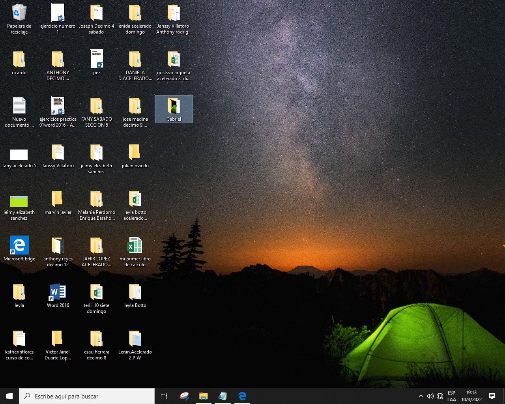

Una historia tecnologica
La tecnologia ha avanzado mucho al paso de los años
ha medida ha ido avanzando es algo que nos ha servido de mucho
hemos aprendido a sacarle provecho a la informatica, La informatica
es el todo en el mundo de la tecnologia
Cuando tenemos algo que hacer sea culaquier cosa nosotros nos
dirigimos a una computadora, por que es el medio que nos ayuda a todo
la tecnologia hay que saberla usar para beneficio de todos, para sacarle
el mejor provecho
Una computadora por muy bajo que sea el sistema, capacida, el windows,
tarjeta de video, memoria ram, como sea la computadora nos ayuda muchisimo
hemos aprendido a usarlas de la mejor manera para aprender mas a cada dia

Hemos acttualizado la historia de la computadora la historia sigue y seguira
Por que la tecnologia nunca va a parar va seguir avanzando siempre para bien de la humanidad
La tecnologia es muy importante es mas que necesaria nos ayuda a todo y nos sigue llenando de conocimiento
En fin la tecnologia es todo aquello que nos ayuda a crecer y seguir avanzando/p>
Siempre vamos a necesitar todo para seguir sacando provecho de la informatica
Por que siempre vamos a necesitar de ella, la tecnologia no solo son computadoras
o celulares nuevos, sino que es aquello que no impulsa a segur creando cosas nuevas
Para el bien de toda la humanidad, eso es la tecnologia
Es por ello el Titulo actualizando la tecnologia.

Nos hemos actualizado mas de lo normal hemos avanzado muchisimo mediante pasa el tiempo
La tecnologia nos ha ayudado, nosotros hemos avanzdao junto con la tecnologia, la ntecnologia a llegado
ha superado cualquier barrera, en todos los apectos para seguir mejorando a toda la humanidad
para bien de todos.

Un ultimo parrafo para concluir con la actualizacion de la informatica, este logo representa todo el tiempo recorrido
durante todo este tiempo, este logo ha actualizado mediante la tecnologia y no concluimos solo con esto por que la
tecnologia no tiene fin es algo que nos va ayudar para siempre, eso es la tecnologia larga duracion para el tiemp completo
La Actualizacion De La Tecnologia Una duracion para toda la vida muchas Gracias.